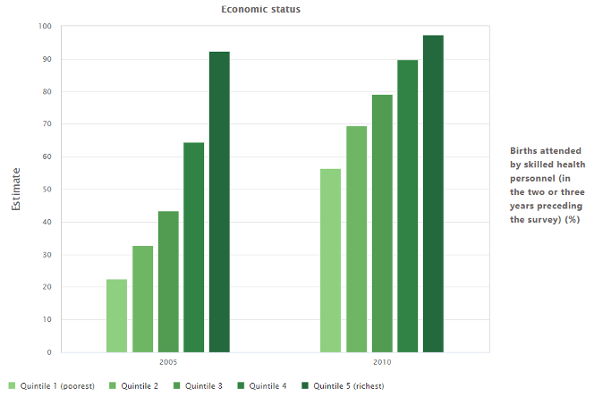
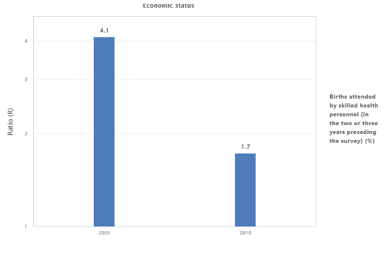
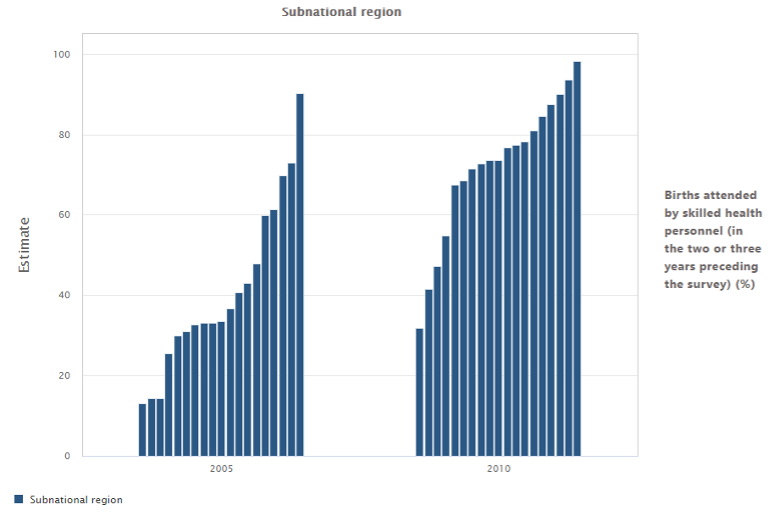
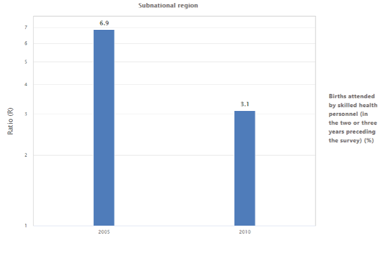
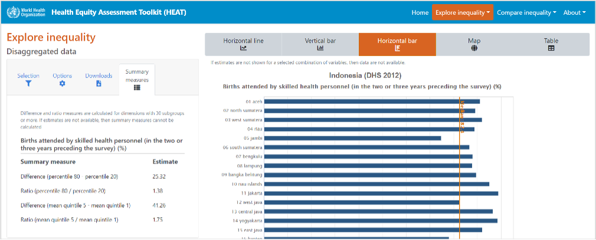
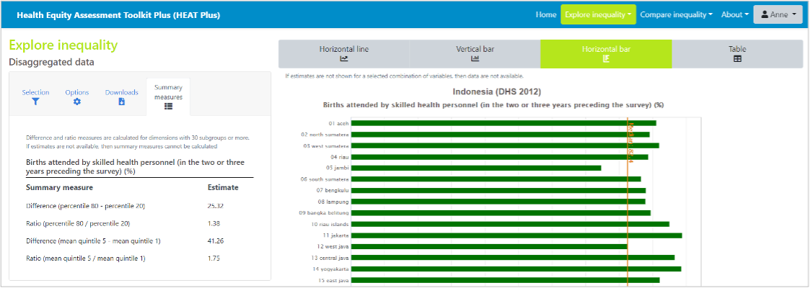

| Figure a. Births attended by skilled health personnel disaggregated by economic status | Figure b. Economic-related inequality in births attended by skilled health personnel: ratio (R) |
|---|---|
|  |  |
Ratio (R)
Definition
R is a relative measure of inequality that shows the ratio of two population subgroups. It is calculated for all inequality dimensions, provided that subgroup estimates are available for the two subgroups used in the calculation of R. R has no unit, therefore it can be used to compare the situation of inequality across indicators with different units.
Calculation
R is calculated as the ratio of two subgroups: R=y_1/y_2 Note that the selection of y_1 and y_2 depends on the characteristics of the inequality dimension and the type of indicator, for which R is calculated. Table 2 provides an overview of the calculation of R.
Table 2 Calculation of the Ratio (R)
| Indicator type | |||
|---|---|---|---|
| Dimension type | Reference subgroup selected? | Favourable indicator | Adverse indicator |
| Binary dimension | Yes | Reference group / Other group | Other group / Reference group |
| No | Highest / Lowest | Highest / Lowest | |
| Ordered dimension | N/A | Most-advantaged / Most-disadvantaged | Most-disadvantaged / Most-advantaged |
| Non-ordered dimension | Yes |
Reference group / Other group (that maximizes the ratio) |
Other group (that maximizes the ratio) / Reference group |
| No | Highest / Lowest | Highest / Lowest | |
The variance of R is calculated as: var(R)= (1/y_2)^2σ_1^2+ (y_1/y_2)^2σ_2^2 where σ_1 and σ_2 indicate the standard errors of the estimates of subgroups 1 and 2.
Interpretation
If there is no inequality, R takes the value one. R takes only positive values. The further the value of R from one, the higher the level of inequality.
Note that R is displayed on a logarithmic scale. R values are intrinsically asymmetric: a ratio of one (no inequality) is halfway between a ratio of 0.5 (the denominator subgroup having half the value of the numerator subgroup) and a ratio of 2.0 (the denominator subgroup having double the value of the numerator subgroup).
Example
Figure a shows data on skilled birth attendance disaggregated by economic status for two years (2005 and 2010). For each year, there are five bars – one for each wealth quintile. The graph shows that, overall, coverage increased in all quintiles and inequality between quintiles reduced over time. The ratio quantifies the level of inequality in each year. Figure b shows that the ratio of quintile 5 to quintile 1 reduced from 4.1 in 2005 to 1.7 in 2010. In 2005, coverage in quintile 5 was about four times higher than in quintile 1, while in 2010, coverage in quintile 5 was less than two times higher than in quintile 1. Relative economic-related inequality decreased between 2005 and 2010.
Figure c shows data on skilled birth attendance disaggregated by subnational region for two years (2005 and 2010). For each year, there are multiple bars – one for each region. The graph shows that, overall, coverage increased in all regions and inequality between regions reduced over time. The ratio quantifies the level of inequality in each year. Figure d shows that the ratio of the best to the worst performing region reduced from 6.9 in 2005 to 3.1 in 2010. In 2005, coverage in the best performing region was almost seven times higher than in the worst performing region, while in 2010, coverage in the best performing region was about three times higher than in the worst performing region. Relative economic-related inequality decreased between 2005 and 2010.
| Figure c. Births attended by skilled health personnel disaggregated by subnational region | Figure d. Subnational regional inequality in births attended by skilled health personnel: ratio (R) |
|---|---|
|  |  |
Other difference measures
In addition to the ratio measure described above, variations of the ratio are calculated for non-ordered inequality dimensions with many subgroups, such as subnational region. The following ratio measures are calculated for
- Dimensions with more than 30 subgroups:
- Ratio of percentile 80 to percentile 20. The ratio of percentile 80 to percentile 20 is calculated by identifying the subgroups that correspond to percentiles 80 and 20 and dividing the estimate for percentile 80 by the estimate for percentile 20: R_{p80p20}=y_{p80}⁄y_{p20}
- Ratio of mean estimates in quintile 5 to quintile 1. The ratio of mean estimates in quintile 5 and quintile 1 is calculated by dividing subgroups into quintiles, determining the mean estimate for each quintile and dividing the mean estimate in quintile 5 by the mean estimate in quintile 1: R_{q5q1}=y_{q5}⁄y_{q1}
- Dimensions with more than 60 subgroups:
- Ratio of percentile 90 to percentile 10. The ratio of percentile 90 to percentile 10 is calculated by identifying the subgroups that correspond to percentiles 90 and 10 and dividing the estimate for percentile 90 by the estimate for percentile 10: R_{p90p10}=y_{p90}⁄y_{p10}
- Ratio of mean estimates in decile 10 to decile 1. The ratio of mean estimates in decile 10 to decile 1 is calculated by dividing subgroups into deciles, determining the mean estimate for each decile and dividing the mean estimate in decile 10 by the mean estimate in decile 1: R_{d10d1}=y_{d10}⁄y_{d1}
- Dimensions with more than 100 subgroups:
- Ratio of percentile 95 to percentile 5. The ratio of percentile 95 to percentile 5 is calculated by identifying the subgroups that correspond to percentiles 95 and 5 and dividing the estimate for percentile 95 by the estimate for percentile 5: R_{p95p5}=y_{p95}⁄y_{p5}
- Ratio of mean estimates in the top 5% to the bottom 5%. The ratio of mean estimates in the top 5% to the bottom 5% is calculated by dividing subgroups into vigintiles, determining the mean estimate for each vigintile and dividing the mean estimate in the top 5% by the mean estimate in the bottom 5%: R_{v20v1}=y_{v20}⁄y_{v1}
For dimensions with many subgroups, these measures may be a more accurate reflection of the level of inequality than measuring the ratio of the maximum and minimum values using the (range) ratio, as they avoid using possible outlier values. They are displayed in the ‘Summary measures’ tab of the selection menu for horizontal bar graphs showing disaggregated data under the ‘Explore inequality’ component of the tool.


💡 Ratio (R)
Measures the ratio of two population subgroups.
Takes the value one if there is no inequality. Takes only positive values (larger or smaller than one). The further the value from one, the higher the level of inequality. Variations of the ratio are calculated for non-ordered inequality dimensions with many subgroups. These measures avoid using possible outlier values.
- Measures relative inequality (relative measure)
- Suitable for all inequality dimensions
- Takes into account two population subgroups (simple measure)
- Does not take into account the population size of subgroups (unweighted measure)